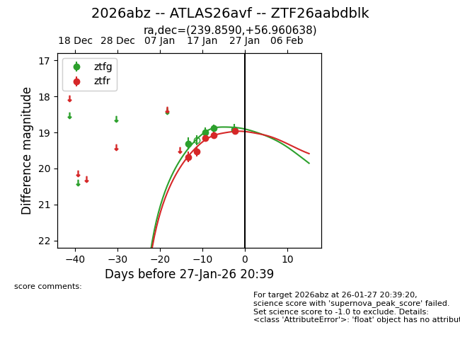
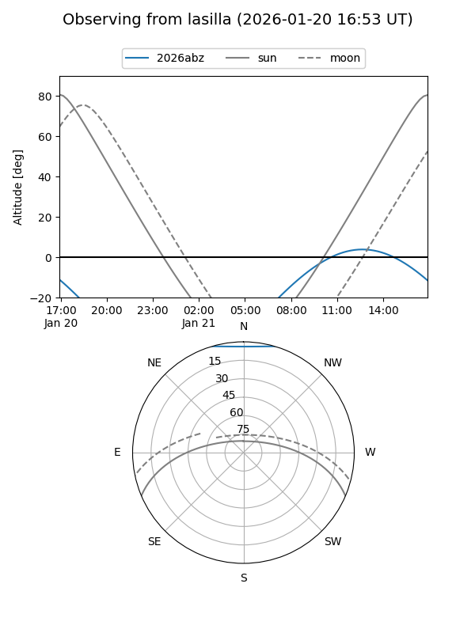
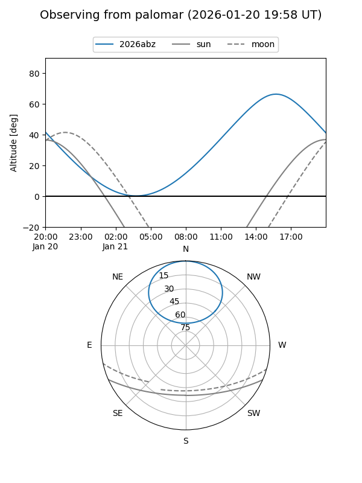
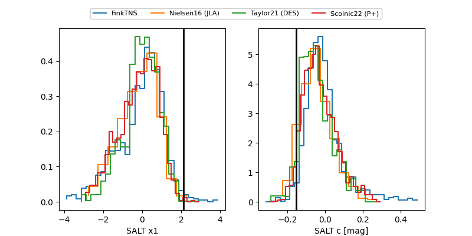

2026abz
Target 2026abz at 2026-01-26 10:41
Aliases and brokers:
FINK: link
Lasair: link
ALeRCE: link
TNS: link
YSE: link
alt names
ZTF26aabdblk (ztf,fink_ztf)
2026abz (tns,yse)
ATLAS26avf (atlas)
Coordinates:
equatorial (ra, dec) = 239.8590,+56.96064
equatorial (HMS+DMS) = 15:59:26.16,+56:57:38.30
galactic (l, b) = (88.2628,+45.49440)
Flags:
Photometry:
last ztfg=18.91, ztfr=18.96
4 ztfg, 5 ztfr detections
Lightcurve

Visibility


Additional plots
